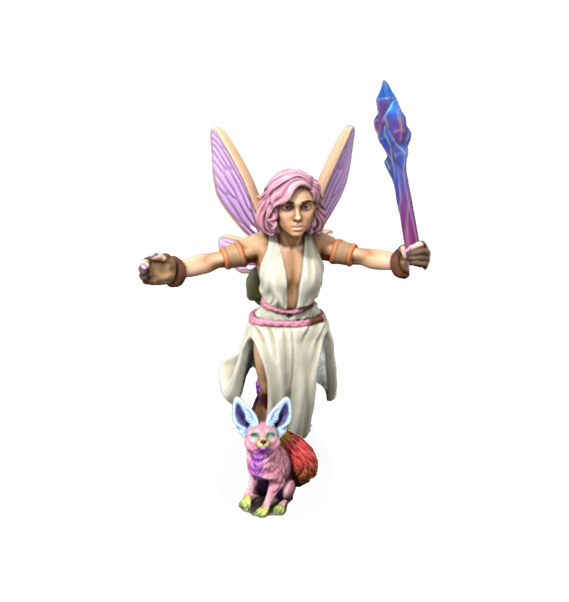

Who are we?
We are epic fortnite gamers
The characters
-

Agnur the Fellshade
Agnur the Fellshade
Agnur the Fellshade is a tarnished from the lands between, trapped here for centruries has made him a master killer of goblins. It this time he has also tamed the skeleton dragon Lahier, who's fire breath ran dry throught the centuries making him only useful for flight. This should help him accomplish his one goal in mind, escape. On his own it has been deemed impossible.
-

Aspen Thornblade
Aspen Thornblade
Aspen Thornblade got her name from her people, the Elves of Thornwoods, her blade and bow made from these woods. She was trapped in the lands betwwen when scouting on a scouting mission on through the mystic trail , which transported her into the lands between.
-

Captain ZerO
Captain ZerO
Captain ZerO was doing a mission in a dungeon with his crew, but after exploring part of it himself he ended up in a mysterious portal and ended up in The Lands Between. Now he must escape so he can return to his crew.
-

Rainbow Sparkle
Rainbow Sparkle
She comes from a land beyond the clouds, where trees are licorice and clouds cotton candy. When scouring the sugar forrest she fell into a large mysterious hole at the foot of a redwood tree where she suddenly emerged into the lands between, trapped with no sight of escape.